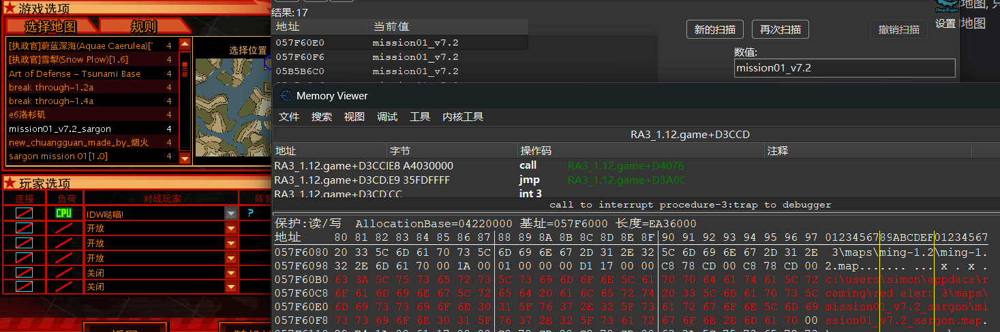
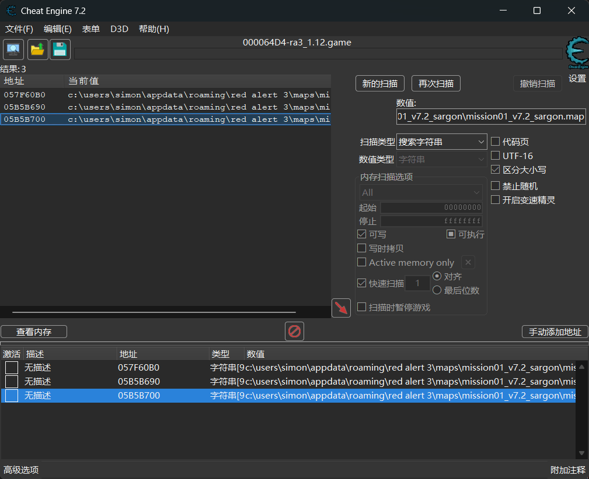
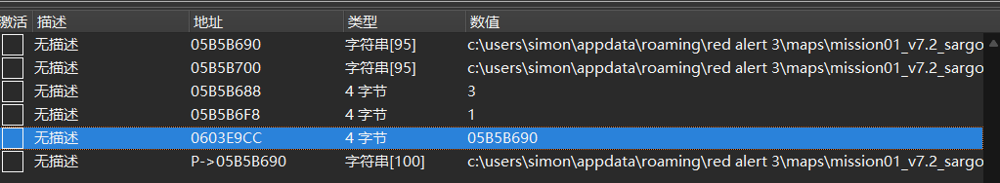

Ra3在线大厅房主选择地图逆向分析
Ra3在线大厅房主选择地图逆向分析
由于玩了很久, 现在我拥有大约1000张地图, 每次想玩到特定的地图找图都是一种折磨, 于是打算写一个辅助工具来快速寻找地图, 记录下过程
正向分析
如果我是开发者, 我会如何写这个功能? 应该是将所有的地图放入一个数组中, 然后由一个下标来控制当前选择的地图
如果我想选择地图, 只需要控制此下标, 即可选择对应的地图
下标分析
尝试搜索下标, 包括精确搜索和模糊搜索并没有搜到对应的下标, 所以它更可能是一种通知机制, UI发生变化时, 通知主程序 call 设置当前函数(下标) , 下标作为栈变量很快会被释放不会长久驻留在程序中, 现在可以获得的信息只有地图名称, 现在开始从字符串进行入手分析
字符串分析
搜索地图时发现确实有地图字符串跟着, 但是地图内存中放的并不是直接的地图名称, 而是地图路径, 且是经过小写后的路径. 直接搜精确地图名称是搜不到的, 说明UI里的数据存储是一种奇怪的方式
c:\users\simon\appdata\roaming\red alert 3\maps\mission01_v7.2_sargon\mission01_v7.2_sargon.map

经过搜集资料, 查到Ra3的UI其实是一种flash动画, 它是解释语言, 不太好控制. 它的显示结果应该是专门的数据结构, 但是由于是解释型语言并不好控制所以还是得从C入手, 同时证明肯定存在Flash回调C的接口, 现在开始从此方向分析
搜索精确路径字符串发现了3个结果 057F60B0 05B5B690 05B5B700 , 查看对应字符串的内存区域如下

057F60B0 - 12 01 00 00 00 D1 17 00 00 C8 78 CD 00 C8 78 CD 00 后接字符串...
05B5B690 - 8 02 00 00 00 5F 00 60 00 后接字符串
05B5B700 - 8 02 00 00 00 5F 00 60 00 后接字符串字符串的长度为95, 换算后是5F, 可以看到内存中有5F和60, 可以推测出前一个5F是字符数量, 60是实际分配内存长度, 带了一个 \0 结尾 字符串前面有一个小数字, 发现当选中此图时此数字会+1, 取消选中会-1, 怀疑是引用计数, 那么字符串的结构应该如下
struct MapString {
uint32_t refCount;
uint16_t length;
uint16_t capacity;
char* data;
}其中 05B5B690 在地图发生变化的时候会更新, 05B5B700 不会, 说明界面上有关的是05B5B690, 对05B5B690进行指针扫描
扫出了三个结果, 更新地图再恢复后发现有一个地址 0603E9CC 会跟着变化, 其他两个会变飞, 说明 0603E9CC 指向地图路径

栈分析
对 0603E9CC 下4字节写入断点, 点击地图中查看栈, 对栈一个一个分析
首先看当前断下函数
004CB650 | push ebx |
004CB651 | push ebp |
004CB652 | push esi |
004CB653 | mov esi,ecx | // this call
004CB655 | call ra3_1.12.4CB0E0 | // InitializeCriticalSection
004CB65A | mov ebx,eax | // ebx应该是锁
004CB65C | mov eax,dword ptr ds:[ebx] | [ebx]:"pdA"
004CB65E | mov edx,dword ptr ds:[eax] |
004CB660 | push FFFFFFFF |
004CB662 | mov ecx,ebx |
004CB664 | call edx | // 虚表调用
004CB666 | mov ebp,dword ptr ss:[esp+10] | // 开头压3个寄存器, ebp = 参数1
004CB66A | cmp ebp,esi | // ecx为this, 对比 this 是否和参数1相同
004CB66C | je ra3_1.12.4CB6B5 |
004CB66E | push edi |
004CB66F | call ra3_1.12.4CB0E0 |
004CB674 | mov edi,eax |
004CB676 | mov eax,dword ptr ds:[edi] | [edi]:"pdA"
004CB678 | mov edx,dword ptr ds:[eax] |
004CB67A | push FFFFFFFF |
004CB67C | mov ecx,edi |
004CB67E | call edx |可以看出有临界区和锁, 切包含this和参数比较, 意味着这里应该是一个字符串比较功能, 相同跳过
001AE5F0 05D85D60 返回到 05D85D60 自 E0605D7C
001AE5F4 05D85D60 返回到 05D85D60 自 E0605D7C
001AE5F8 05D85D94
001AE5FC 00000001
001AE600 00684216 返回到 ra3_1.12
001AE604 001AE628 &"c:\\users\\simon\\appdata\\roaming\\red alert 3\\maps\\pacific_showdown_corona\\pacific_showdown_corona.map"
001AE608 05B63BCC &L"$Map:pacific_showdown_corona"
001AE60C 05B63C50 &"c:\\users\\simon\\appdata\\roaming\\red alert 3\\maps\\pacific_showdown_corona\\pacific_showdown_corona.map"
001AE610 004CB5FF 返回到 ra3_1.12
001AE614 0422B050
001AE618 05B63BCC &L"$Map:pacific_showdown_corona"
001AE61C 05D85D60 返回到 05D85D60 自 E0605D7C
001AE620 00691AF2 返回到 ra3_1.12
001AE624 00691AF9 返回到 ra3_1.12
001AE628 05B5CDA8 "c:\\users\\simon\\appdata\\roaming\\red alert 3\\maps\\pacific_showdown_corona\\pacific_showdown_corona.map"分析第一个 001AE600 00684216
00684200 | sub esp,14 |
00684203 | push ebp |
00684204 | push edi |
00684205 | mov edi,ecx |
00684207 | lea eax,dword ptr ss:[esp+20] | [esp+20] 第一个参数 (14 + 4 + 4), 取第一个参数地址
0068420B | lea ebp,dword ptr ds:[edi+34] |
0068420E | push eax |
0068420F | mov ecx,ebp |
00684211 | call ra3_1.12.4CB650 | 比较([edi+34], 第一个参数)
00684216 | cmp byte ptr ds:[edi+2C],0 |
0068421A | je ra3_1.12.684559 | 相同跳过, 直接跳到最后了
00684220 | mov edx,dword ptr ds:[edi] | [edi]:"pdA"
00684222 | mov eax,dword ptr ds:[edx+2C] |
00684225 | mov ecx,edi |
00684227 | call eax |这里应该是一个thiscall, 调用了对比功能, 相同则几乎跳过了全部代码, 总之应该是一个和字符串相关的功能, 则继续往上
004CB5D0 | push esi |
004CB5D1 | push edi |
004CB5D2 | mov edi,ecx |
004CB5D4 | call ra3_1.12.4CB0E0 |
004CB5D9 | mov esi,eax |
004CB5DB | mov eax,dword ptr ds:[esi] |
004CB5DD | mov edx,dword ptr ds:[eax] |
004CB5DF | push FFFFFFFF |
004CB5E1 | mov ecx,esi |
004CB5E3 | call edx |
004CB5E5 | mov eax,dword ptr ss:[esp+C] |
004CB5E9 | mov eax,dword ptr ds:[eax] |
004CB5EB | test eax,eax |
004CB5ED | mov dword ptr ds:[edi],eax | [edi]:"pdA"
004CB5EF | je ra3_1.12.4CB5F5 |
004CB5F1 | add dword ptr ds:[eax-8],1 |
004CB5F5 | add esi,8 |
004CB5F8 | push esi |
004CB5F9 | call dword ptr ds:[<LeaveCriticalSectio |
004CB5FF | mov eax,edi | <--- 在这里
004CB601 | pop edi |
004CB602 | pop esi |
004CB603 | ret 4 |这里的内存地址已经不在游戏里了, 是一个系统调用, 它可能是某次call的残骸, 这个不进行分析
00691A70 | push ecx |
00691A71 | mov ecx,dword ptr ds:[CE8BD8] | 00CE8BD8:&"h锪"
00691A77 | test ecx,ecx |
00691A79 | push ebx |
00691A7A | push ebp |
00691A7B | push esi |
00691A7C | push edi |
00691A7D | je ra3_1.12.691B41 | // ecx = dword ptr ds:[CE8BD8] 为 0 时跳到最后
00691A83 | mov eax,dword ptr ds:[ecx] | // 取出 [CE8BD8] 虚表
00691A85 | mov edx,dword ptr ds:[eax+104] | // 取出 [CE8BD8] 虚表的 104 偏移
00691A8B | call edx | // 做查询, 返回值在eax
00691A8D | mov ecx,dword ptr ds:[CE0930] | // 换另一个全局对象
00691A93 | mov esi,eax | // 上个查询结果放到esi
00691A95 | mov eax,dword ptr ss:[esp+18] | // 开头压5参数占用 14, 说明第一参数
00691A99 | push eax |
00691A9A | call ra3_1.12.56DA60 | // this call, [CE0930].(参数1)
00691A9F | mov edi,eax | // 返回值放到eax -> edi查看此函数调用方
00ABFD73 | push eax |
00ABFD74 | call ra3_1.12.691A70 |可以看到此函数只有一个参数 eax, 且断点发现是一个比较小的值, 每个图的eax都不同, 且差距比较小, 基本可以确认此值为地图索引
地图索引分析
跟踪到此为止, 接下来切到ida里进行分析, 使用F5初步看一下逻辑, 可以看到几个关键调用.
首先看到 00CE8BD8 这个地址, 查一下它的引用可以看到大量 mov ecx, [CE8BD8] , 说明它应该是一个全局对象, 而且被大量用到, 把他命名为 manager
然后是一个 thiscall, 它里面的 map_find 一看就知道是一个二叉查找, 根据查询结果返回 nullptr 或者 v4+20 的位置, 它应该就是value
char *__thiscall get_map_value(char *this, int map_index)
{
char *v4; // [esp+4h] [ebp-4h] BYREF
map_find(this, &v4, &map_index);
if ( v4 == this + 4 )
return 0;
else
return v4 + 20;
}_DWORD *__thiscall map_find(_DWORD *this, _DWORD *result, _DWORD *key)
{
_DWORD *v3; // eax
_DWORD *v4; // edx
_DWORD *v5; // ecx
v3 = (_DWORD *)*(this + 3);
v4 = this + 1;
v5 = this + 1;
while ( v3 )
{
if ( v3[4] < *key )
{
v3 = (_DWORD *)*v3;
}
else
{
v5 = v3;
v3 = (_DWORD *)v3[1];
}
}
if ( v5 == v4 || *key < v5[4] )
{
*result = v4;
return result;
}
else
{
*result = v5;
return result;
}
}此处ida反编译有问题, 能看到 get_map_value 是一个thiscall, 但是看不到this, 切换到汇编可以看到
014 mov ecx, dword_CE0930
014 mov esi, eax
014 mov eax, [esp+14h+map_index]
014 push eax
018 call get_map_value其中 [CE0930] 应该就是地图的映射了, 切过去分析, 通过 map_find 可以知道
v3 为root, 偏移为 3*4=C, v4/v5 为 sentinel v3[0] 为 left, v3[1] 为 right, v3[4] 为 key, v3[5] 为 value, 它的结构为
struct MapRoot {
void* unknown;
MapNode* sentinel;
MapNode* root;
}
struct MapNode {
MapNode* left;
MapNode* right;
void* unknown;
int key;
void* value;
}汇编后面用到了拿到的node
sub_4CB5D0(map_node + 132);
sub_684200(v5);
sub_67BBC0(*(_DWORD *)(map_node + 64));
sub_67BD00(*(_DWORD *)(map_node + 60));发现132偏移就是要找的地图路径字符串, 至此所有数据全部解析完毕, 可以用这些数据实现辅助工具